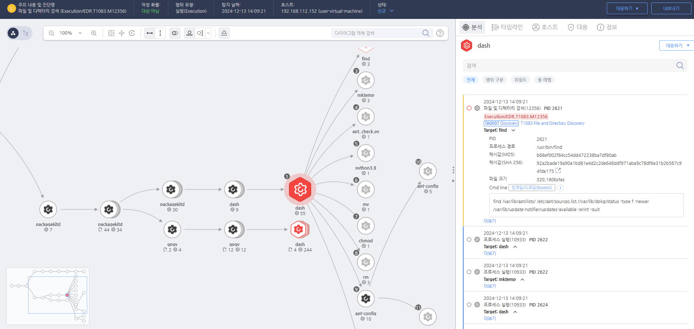

T1083.000.02 파일 및 디렉터리 검색
D3FEND
MITRE ATT&CK 액션을 기준으로 대응 방안을 작성
Detection
모니터링을 통해 'find' 명령어로 민감한 파일 및 디렉터리를 검색을 탐지합니다.
Detection(EDR)

https://172.18.10.125:8903/#/analysis/incident/675bc2b1002dc79500000a39
Response
해당 행위를 수행한 프로세스를 종료합니다.
Mitigations
파일 및 디렉터리 권한 설정 강화 (M1035 - Access Control)
- 파일 및 디렉터리에 대한 권한을 최소화하여 불필요한 접근을 차단하고, 민감한 파일에 대한 읽기 및 쓰기 권한을 제한
- 디렉터리 및 파일에 대한 접근을 필요 최소한의 사용자로 제한하여 파일 검색을 통한 정보 수집을 방지
- 최소 권한 원칙을 준수하여, 최소한의 권한만을 부여하고 불필요한 시스템 정보 접근을 제한
파일 무결성 모니터링 및 탐지 (M1049 - File Integrity Monitoring)
- 파일 무결성 모니터링(FIM) 도구를 설정하여 파일 시스템에서 불법적인 파일 변경이나 디렉터리 추가를 실시간으로 탐지
- 중요한 시스템 파일 및 디렉터리에 대한 무결성 검사를 활성화하여 공격자가 파일 시스템을 스캔해도 변경된 사항을 실시간으로 감지
- 파일 시스템의 불법적인 탐색을 방지하기 위한 무결성 검사를 주기적으로 수행
시스템 로그 모니터링 및 감사 (M1047 - System Logging & Monitoring)
- 시스템 로그를 모니터링하고, 파일 탐색이나 디렉터리 열기와 관련된 이상 활동을 실시간으로 감지
- 디렉터리 탐색 및 파일 열기 로그를 추적하여 파일 시스템에서 발생하는 비정상적인 행동을 탐지하고 경고
- 로그 분석 및 보안 정보 및 이벤트 관리(SIEM) 도구를 활용하여 파일 시스템 활동을 실시간으로 감시
디렉터리 및 파일 구조 숨기기 (M1016 - Obfuscated Files or Information)
- 파일 및 디렉터리 이름을 암호화하거나 숨겨서 공격자가 파일 시스템을 쉽게 탐색하지 못하도록 설정
- 중요한 시스템 파일 및 디렉터리를 숨기거나 암호화하여 공격자가 시스템을 스캔할 때 파일을 탐지할 수 없게 함
- 디렉터리 구조를 복잡하게 설정하여 디렉터리 나열을 통해 목표 파일 탐지를 어렵게 만듦
시스템 구성 검토 및 강화 (M1038 - Execution Prevention)
- 불필요한 파일 시스템이나 디렉터리를 시스템에서 제거하고, 중요한 시스템 구성에 대한 접근을 엄격히 제한
- 시스템을 정기적으로 점검하여 불필요한 파일 및 디렉터리가 남아 있지 않도록 하고, 최소한의 시스템 구성을 유지
- 시스템을 주기적으로 점검하여 불필요한 파일이나 디렉터리가 남아있지 않도록 관리
파일 및 디렉터리 탐색 제한 (M1032 - Network Traffic Filtering)
- 네트워크 트래픽 필터링을 설정하여 디렉터리 탐색 및 파일 검색을 위한 네트워크 통신을 제한
- 파일 시스템에서의 불필요한 네트워크 요청을 차단하고 디렉터리 탐색이 외부와 연결된 네트워크에서 발생하지 않도록 제한
- 네트워크 보안 시스템을 설정하여 파일 및 디렉터리 탐색에 관련된 비정상적인 외부 접근을 차단
사용자 교육 및 보안 인식 강화 (M1019 - Awareness and Training)
- 직원 교육을 통해 파일 시스템 및 디렉터리에 대한 불필요한 접근을 방지하고 보안 규정을 철저히 준수하도록 교육
- 파일 시스템의 보안을 강화하고, 불필요한 파일 탐색에 대한 경각심을 높여 내부 공격을 예방
- 파일 및 디렉터리 탐색을 통한 악성 코드 실행을 예방하기 위해 시스템 보안에 대한 직원 인식을 향상
침해 탐지 시스템(IDS/IPS) 사용 (M1030 - Malware Protection)
- 침해 탐지 시스템(IDS/IPS)을 설정하여 디렉터리 탐색을 포함한 이상 행위를 실시간으로 탐지하고, 비정상적인 탐색을 차단
- IDS/IPS 시스템을 사용하여 파일 시스템 탐색 시 나타날 수 있는 악성 행위를 탐지하고 경고
- 파일 및 디렉터리 탐색 관련 공격을 실시간으로 탐지하고, 비정상적인 접근을 차단
Affected Techniques
Action 실행시 함께 영향을 받는 다른 Techniqes
| ATT&CK |
| T1083.000 |
| T1074.001 |
| D3FEND |
| D3-FAPA File Access Pattern Analysis |
| D3-FCA File Creation Analysis |
| D3-FIM File Integrity Monitoring |